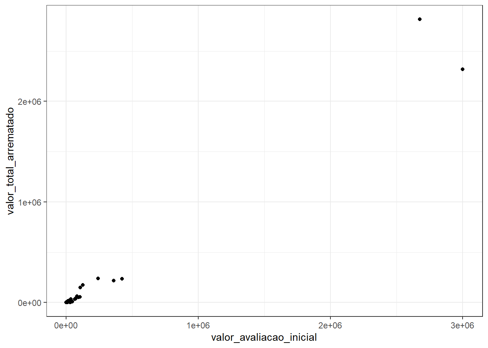
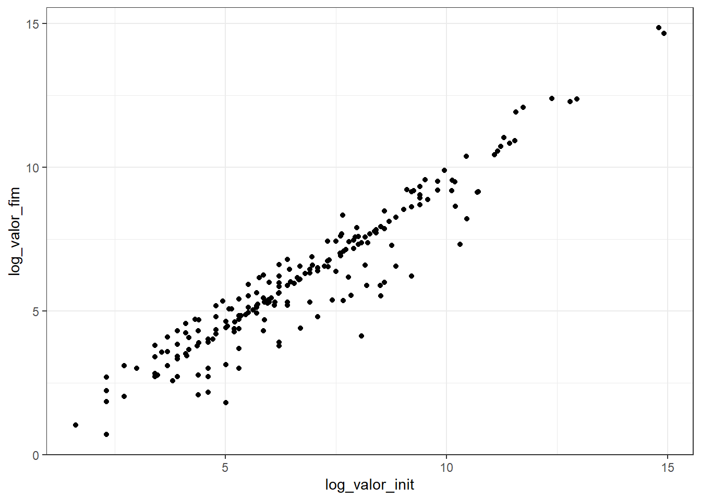
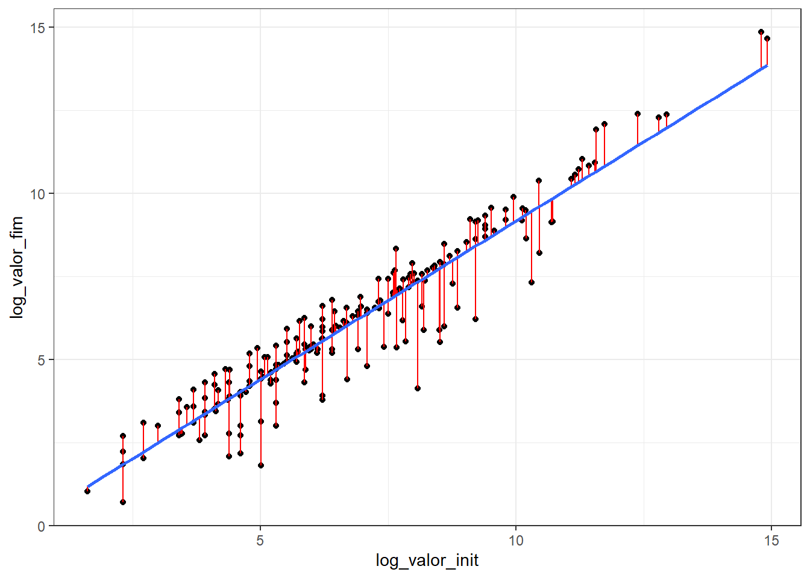

library(abjData)
library(tidyverse)Revisão de conteúdo
Métodos e Técnicas de Pesquisa em Ciência Política III
Começando do início
A ideia dessa revisão é retomar o conteúdo do curso desde o início até o tópico de causalidade. Portanto, o professor inicia pela Fnção de Esperança Condicional (CEF, em inglês).
Função de Esperança Condicional
- A esperança condicional de Y dado X é:
\[E[Y|X = x] = \sum_{i=1}^{n}\cdot Pr(Y=y_{i}|X=x_{i})\]
Ex.: Salário condicionado por gênero. Salário de cada indivíduo multiplicado pela probabilidade desse indivíduo ser homem ou mulher
A esperança condicional pode ser uma função não-linear, mas vamos supor que podemos aproximá-la bem por uma reta. Ou seja:
\[E[Y|X] = {\alpha} + {\beta}\cdot X\]
- Essa equação também é chamada de modelo de regressão populacional
Erro da Regressão
- A diferença entre cada observação e a média condicional é chamada de erro
\[y_{i}=\alpha +\beta \cdot x_{i}+e_{i}\]
- A esp. condicional que estamos aproximando pela reta de regressão é uma média (condicional)
Propriedades do modelo
- \(E[erro|X] = 0\)
- \(E[erro] = 0\)
- O primeiro item da lista é uma consequência da nossa suposição de que \(E[Y|X]={\alpha}+\beta \cdot X\)
Se estamos dizendo que \(E[erro|X] = 0\) temos como implicação que o \(X\) e o \(erro\) não são correlacionados.
Interpretando o modelo: o efeito marginal
O que é o erro marginal? Se aumentarmos o \(X\) em 01 (uma) unidade, quanto esperamos que o \(Y\) mude?
\[E[Y|X = x + 1] - E[Y|X = x] = {\alpha} + {\beta} \cdot (x + 1) - {\alpha} - {\beta} \cdot x\] \[E[Y|X = x + 1] - E[Y|X = x] = {\beta} \cdot (x + 1 - x)\] \[E[Y|X = x + 1] - E[Y|X = x] = {\beta}\]
Chamamos \({\beta}\) de efeito marginal de \(X\) sobre \(Y\) e representa quanto em média \(y\) deve aumentar para um aumento de uma unidade em \(X\).
Estimando o modelo de Regressão
Para estimar o modelo de Regressão, utilizamos uma amostra
Vamos usar o método de Mínimos Quadrados Ordinários (Ordinary Least Squares) para estimar os parâmetros da reta de regressão
As estimativas serão designadas pela letra grega com “chapéu” (hat, em inglês)
\(\hat{\alpha}\) e \(\hat{\beta}\)
Exemplo no R
Carregando os pacotes
Base utilizada
A base leiloes disponibiliza dados sobre propriedades de empresas que faliram que vão para leilão para abater a dívida dessas empresas.
abjData::leiloes# Observatório das falências em São Paulo - amostra
abjData::leiloes |>
drop_na(valor_total_arrematado, valor_avaliacao_inicial) |>
ggplot(
aes(
x = valor_avaliacao_inicial,
y = valor_total_arrematado)
) +
geom_point() +
theme_bw()
Por que usamos escala logarítmica? Para facilitar a visualização da distribuição dos dados.
p_reg_leiloes <- leiloes |>
mutate(
log_valor_init = log(valor_avaliacao_inicial),
log_valor_fim = log(valor_total_arrematado)
) |>
drop_na(valor_total_arrematado, valor_avaliacao_inicial) |>
ggplot(
aes(
x = log_valor_init,
y= log_valor_fim)
) +
geom_point() +
theme_bw()
print(p_reg_leiloes)
Vamos adicionar uma reta de regressão e segmentos de reta entre a reta de regressão e os valores individuais (resíduos).
A ideia da reta de regressão é achar um \(\alpha\) e um \(\beta\) que descreva uma reta entre os pontos.
- \(\alpha\) é o intercepto: valor que cruza o eixo \(y\)
- \(\beta\) é o efeito marginal: fornece a inclinação da reta
p_reg_updated <- p_reg_leiloes +
geom_segment(
aes(
x = log_valor_init,
y = log_valor_fim,
xend = log_valor_init,
yend = predict(
lm(log_valor_fim ~ log_valor_init)
)
),
color="red") +
geom_smooth(method = "lm", se=FALSE)
print(p_reg_updated)`geom_smooth()` using formula = 'y ~ x'
Breve interpretação: vamos supor que \(x = 5\). Na nossa reta de regressão, estamos prevendo que (em média), quando \(x = 5\) temos que \(y=reta\).
Por que a reta de regressão foi escolhida e não qualquer outra? O método OLS encontra a melhor reta minimizando o erro. Este método minimiza a soma dos erros ao quadrado.
Soma dos Quadrados dos Resíduos
O erro da regressão é chamado de resíduo
Para achar a melhor reta, é preciso minimizar a soma dos resíduos (ao quadrado) da regressão
Qualquer reta que …
Propriedades do estimador de OLS
O estimador de OLS é não-viesado. Mas o que isso significa?
Significa que a média de infinitos \(\hat{\beta}\) é igual ao parâmetro populacional \(\beta\), ou seja, significa que em média acertamos o verdadeiro valor do parâmetro
Em estatística, um estimador é nao-viesado quando \(E[\hat{x}] = x\)
Podemos calcular a variância de \(\hat{\beta}\)
Se tirarmos a raiz da variÂncia, teremos o desvio padrão de \(\hat{\beta}\), que é chamado de erro padrão (standard error)
O standard error é o desvio padrão amostral do estimador
Rodando uma Regressão no R
leiloes_reg <- leiloes |>
mutate(
log_valor_init = log(valor_avaliacao_inicial),
log_valor_fim = log(valor_total_arrematado)) |>
drop_na(valor_total_arrematado, valor_avaliacao_inicial)
reg <- lm(
# v. dependente
log_valor_fim ~
# v. independente + vi2 + vi3 ...
log_valor_init,
data = leiloes_reg)
summary(reg)
Call:
lm(formula = log_valor_fim ~ log_valor_init, data = leiloes_reg)
Residuals:
Min 1Q Median 3Q Max
-3.2025 -0.0930 0.1098 0.4560 1.4054
Coefficients:
Estimate Std. Error t value Pr(>|t|)
(Intercept) -0.35944 0.15242 -2.358 0.0192 *
log_valor_init 0.95269 0.02154 44.231 <2e-16 ***
---
Signif. codes: 0 '***' 0.001 '**' 0.01 '*' 0.05 '.' 0.1 ' ' 1
Residual standard error: 0.7818 on 230 degrees of freedom
Multiple R-squared: 0.8948, Adjusted R-squared: 0.8943
F-statistic: 1956 on 1 and 230 DF, p-value: < 2.2e-16Vamos interpretar os resultados.
Estimate: estima o alpha-chapéu e o beta-chapéu (nome da variável)
O beta-chapéu é o efeito marginal (o quanto esperamos que mude o log_valor_final?)
Quanto maior a variancia, o beta…
Causalidade
Noções básicas
Influência de uma variável sobre outra
Existência de uma ação (tratamento) aplicada sobre uma unidade (i)
Cada par ação-unidade está associado a um determinado resultado (realização de Y)
Exemplo - Efeitos de uma política pública
Vamos supor que para cada unidade \(i\) a variável de interesse (dependente) assume \(Y_{i} (0)\) ou \(Y_{i} (1)\)
Imaginar cenários contrafactuais ajuda a pensar nos efeitos causais
Definição de causalidade: diferença entre o factual e o contrafactual
Equação que conecta o factual ao contrafactual (equação de resultados potenciais):
- \(Y_{i}^{obs} = Y_{i}(1)\cdot T + Y_{i}(0)\cdot (1-T)\)
onde \(Y_{i}^{obs}\) é o resultado potencial se ele recebeu o tratamento \(Y_{i}(1)\) multiplicado pelo o que de fato acontece \(T\) mais o resultado potencial se ele não recebeu o tratamento \(Y_{i}(o)\) multiplicado por \((1-T)\).
O que é causalidade, afinal?
O efeito causal é a comparação (a diferença) entre os resutlados potenciais, para a mesma unidade no mesmo momento pós-tratamento
O efeito causal não é uma comparação de uma mesma unidade antes e depois de receber o tratamento
“Problema fundamental da inferencia causal”: apenas um resultado potencial se realiza
Necessidade de múltiplas unidades para a inferência causal
Quantidades de interesse (Causal Estimands)
A ideia da causalidade, em termos mais simples, é verificar o que acontece com uma dada unidade que recebeu um dado tratamento. O que queremos é encontrar a diferença que existe entre a unidade com tratamento e essa mesma unidade sem tratamento no mesmo momento.
Conforme isso não é possível, a menos que possamos acessar universos paralelos (se existirem) podemos trabalhar com dois conceitos:
- Average Treatment Effect (ATE)
\[E[Y_{i}(1)-Y_{i}(0)]\] O ATE é a média das diferenças dos resultados potenciais (não dos resultados observados).
- Average Treatment Effect on the Treated (ATT)
\[ E[Y_{i}(1)-Y_{i}(0)|T_{i}=1]\]
Aqui temos a diferença média entre as unidades que receberam o tratamento, em função dos resultados potenciais.
Decomposição do Efeito Causal: ATT + Selection Bias
Vejamos uma expressão que pretende comparar unidades que receberam tratamento com unidades que não receberam tratamento e interepretar o resultado em termos causais
\[E[Y_{i}^{obs}|T=1]-E[Y_{i}^{obs}|T=0]\]
Perceba que essa expressão utiliza resultados observados e não resultados potenciais. Logo, não temos uma expressão que permita ser interepretada causalmente.
Vamos transformar alguns termos para demonstrar porquê.
Passo 1
Podemos perguntar qual o resultado potencial quando \(T=1\) e quando \(T=0\), dado que \(T=1\). Da mesma forma, podemos podemos perguntar qual o resultado potencial quando \(T=1\) e quando \(T=0\), dado que \(T=0\). Veja que transformamos, na equação abaixo, os resultados observados em resultados potenciais.
\[E[Y_{i}(1)\cdot T + Y_{i}(0)\cdot (1-T)|T=1] - E[Y_{i}(1)\cdot T + Y_{i}(0)\cdot (1-T)|T=0]\] No caso de perguntar, por exemplo, qual o resultado potencial se a unidade tivesse sido exposta ao tratamento, isto é, qual \(Y_{i}(1)\cdot T\) e qual \(Y_{i}(0)\cdot (1-T)\), dado que, \(T=0\).
Passo 2
\[E[Y_{i}(1)|T=1] - E[Y_{i}(0)|T=0]\]
Passo 3
\[E[Y_{i}(1)|T=1] - {\color{Red} E[Y_{i}(0)|T=1] + E[Y_{i}(0)|T=1]} - E[Y_{i}(0)|T=0]\]
Passo 4
\[{\color{Orange} E[Y_{i}(1)-Y_{i}(0)|T=1] } + {\color{Blue} E[Y_{i}(0)|T=1] - E[Y_{i}(0)|T=0]}\] Veja que o termo laranja é a mesma coisa que o ATT e o termo azul é “o que aconteceria, em média, com as unidades que receberam tratamento se elas não tivessem sido tratadas (contrafactual) menos \((-)\) a média do resultado potencial das unidades que não receberam tratamento, dado que, de fato, não foram tratadas (portanto, resultados observados).
Passo 5
\[{\color{Orange}ATT} + {\color{Blue}Selection Bias}\] O termo em azul, chamado de selection bias, é a diferença média que observaríamos entre as unidades que foram tratadas e as que não foram tratadas se ambas as unidades não tivessem sido tratadas.
Conclusão
Vamos supor que existe uma diferença estrutural entre as unidades tratadas e não tratadas (as unidades tratadas apresentam características que causam o efeito que estamos querendo medir, mas não sabemos que característica é essa porque não estamos a considerando em nosso modelo), de modo que o efeito que queremos medir existe mesmo se as unidades tratadas não fossem tratadas (característica que causa o efeito, mas que não conhecemos qual é).
Desse modo, mesmo se as unidades tratadas não tivessem sido tratadas, o efeito ainda assim existiram. Logo, o tratamento não causa o efeito.
A comparação ingênua entre \(E[Y_{i}^{obs}|T=1]-E[Y_{i}^{obs}|T=0]\) é simplesmente o \({\color{Orange}ATT} + {\color{Blue}Selection Bias}\).
A diferença estrutural é o selection bias, que não representa o efeito ausal do tratamento.
Conforme só observamos o número final, nós não sabemos o quanto desse número é o \(ATT\) e o quanto é o \(selectoin bias\).
Importante: só podemos falar de causalidade quando garantimos que o \(selection bias\) é zero.